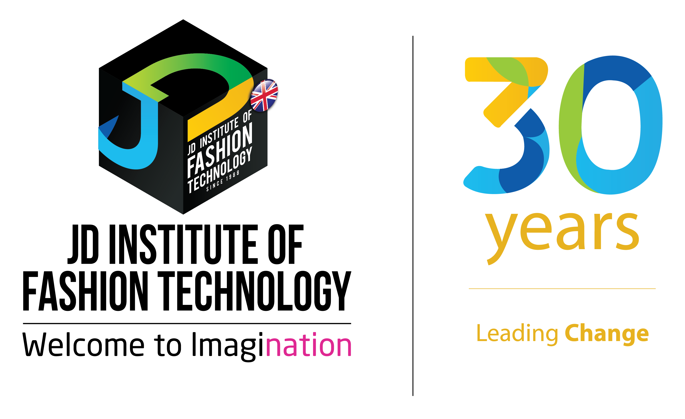

Fashion stylists help clients improve their image, produce ideas for photoshoots, select clothing & accessories for events, filming and photoshoots, work for fashion magazines and more. Fashion stylists generally work freelance, although stylists can be employed by publishing companies, model agencies, advertising agencies, events management companies, fashion labels, shopping centres or retail stores to name a few.
|  | JD Institute of Fashion Technology East Centre New Delhi Plot No 6, Dayanand Vihar Opp Pillar No. 121, Near Karkaduma Metro Station New Delhi, Delhi 110092 |
|---|
| JD Institute of Fashion Technology No 79, 2nd Cross Road Near Shezan Hotel, Shanthala Nagar Ashok Nagar, Bengaluru Karnataka 560001 |
|---|
| NIFT-TEA College of Knitwear Fashion East of TEKIC Mudalipalayam, Tiruppur Tamil Nadu 641606 |
|---|
| Indian Insitute Of Fashion Technology No.549/E, 2nd Floor, Laner Pride Double Road, Next to HDFC Bank 1st Stage, Indiranagar Bengaluru, Karnataka 560038 |
|---|
| Indian Fashion Academy Saraswati, Opp. PNG Jeweller Ram Maruti Rd, Naupada Thane West, Mumbai Maharashtra 400602 |
|---|